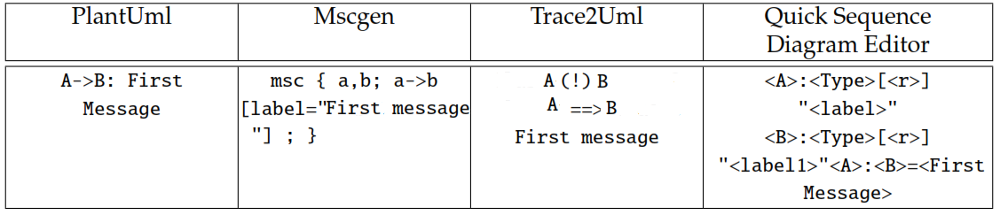

Incremental Development
with Sequence Diagrams
Author: Supervisor:
Can Eldem Dr. Juliana Bowles
Sequence Diagrams
- Describe the sequence of actions
- Diagram progresses from up to down objects left to right
Where Sequence Diagrams Used?
- Design and documentation (SRS,SDD documents)
- E.g multimedia, embedded system
Sequence Diagram Notations
Sequence Diagram Notations
Objectives
- Develop a simple textual notation for sequence diagrams including all interaction fragment operators and decomposition mechanisms available in UML2
- Generate a graphical sequence diagram from a given textual notation.
- Enable flexible changes to the textual notation with immediate visualization of the changes in the sequence diagram.
- Create a trace modeler
Developing Sequence Diagrams
- Sequence diagrams developed from textual notation.
-

- New technologies emerge
Existing Products in Industry
- UMLet
- Visual Paradigm
- StarUML
- Architexa
Frameworks Using Textual Description
- Mscgen
- Trace2uml
- Websequencediagrams
- PlantUml
- Quick Sequence Diagram Editor
- 
PlantUml Architecture
Limitations of PlantUml
- PlantUml is not capable of generating XMI files
- XML files generated by PlantUml does not include id tags
-
<svg > <circle id="myCircle" fill="red" cx="100" cy="50" r="40" fill="url(#myGradient)" onmousedown="alert('hello');"/> -
Projects Using PlantUml
Display Mechanism
Overall Look
Decomposition
| Life Line Decomposition | Reference Another Diagram |
|---|---|
Static Decomposition
Static Decomposition
Dynamic Decomposition
Dynamic Decomposition
Incremental Development Mechanism
Incremental Development Mechanism
Incremental Development Mechanism
Other Small Features
Software Engineering Process
- Development
- Documentation
- Versioning
- Bug Control and Testing
- Deployment
Software Engineering Process
- Inadequate Documentation
- XML-PlantUml issues
Future Developments
Form Based Diagram Drawers
Future Developments
Specification Document Parser
Future Developments
Program Improvements
- More Automation
- Special file system
Conclusion
Focus on
- Decomposition
- Incremental Development

Source: http://eldemcan.github.io/Puse/
Thanks for Listening